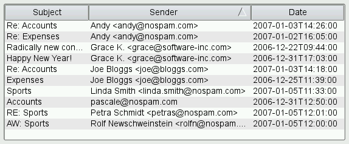

QSortFilterProxyModel Class
The QSortFilterProxyModel class provides support for sorting and filtering data passed between another model and a view. More...
| Header: | #include <QSortFilterProxyModel> |
| CMake: | find_package(Qt6 COMPONENTS Core REQUIRED) target_link_libraries(mytarget PRIVATE Qt6::Core) |
| qmake: | QT += core |
| Inherits: | QAbstractProxyModel |
Properties
|
|
Public Functions
| QSortFilterProxyModel(QObject *parent = nullptr) | |
| virtual | ~QSortFilterProxyModel() |
| bool | autoAcceptChildRows() const |
| bool | dynamicSortFilter() const |
| Qt::CaseSensitivity | filterCaseSensitivity() const |
| int | filterKeyColumn() const |
| QRegularExpression | filterRegularExpression() const |
| int | filterRole() const |
| bool | isRecursiveFilteringEnabled() const |
| bool | isSortLocaleAware() const |
| void | setAutoAcceptChildRows(bool accept) |
| void | setDynamicSortFilter(bool enable) |
| void | setFilterCaseSensitivity(Qt::CaseSensitivity cs) |
| void | setFilterKeyColumn(int column) |
| void | setFilterRole(int role) |
| void | setRecursiveFilteringEnabled(bool recursive) |
| void | setSortCaseSensitivity(Qt::CaseSensitivity cs) |
| void | setSortLocaleAware(bool on) |
| void | setSortRole(int role) |
| Qt::CaseSensitivity | sortCaseSensitivity() const |
| int | sortColumn() const |
| Qt::SortOrder | sortOrder() const |
| int | sortRole() const |
Reimplemented Public Functions
| virtual QModelIndex | buddy(const QModelIndex &index) const override |
| virtual bool | canFetchMore(const QModelIndex &parent) const override |
| virtual int | columnCount(const QModelIndex &parent = QModelIndex()) const override |
| virtual QVariant | data(const QModelIndex &index, int role = Qt::DisplayRole) const override |
| virtual bool | dropMimeData(const QMimeData *data, Qt::DropAction action, int row, int column, const QModelIndex &parent) override |
| virtual void | fetchMore(const QModelIndex &parent) override |
| virtual Qt::ItemFlags | flags(const QModelIndex &index) const override |
| virtual bool | hasChildren(const QModelIndex &parent = QModelIndex()) const override |
| virtual QVariant | headerData(int section, Qt::Orientation orientation, int role = Qt::DisplayRole) const override |
| virtual QModelIndex | index(int row, int column, const QModelIndex &parent = QModelIndex()) const override |
| virtual bool | insertColumns(int column, int count, const QModelIndex &parent = QModelIndex()) override |
| virtual bool | insertRows(int row, int count, const QModelIndex &parent = QModelIndex()) override |
| virtual QModelIndex | mapFromSource(const QModelIndex &sourceIndex) const override |
| virtual QItemSelection | mapSelectionFromSource(const QItemSelection &sourceSelection) const override |
| virtual QItemSelection | mapSelectionToSource(const QItemSelection &proxySelection) const override |
| virtual QModelIndex | mapToSource(const QModelIndex &proxyIndex) const override |
| virtual QModelIndexList | match(const QModelIndex &start, int role, const QVariant &value, int hits = 1, Qt::MatchFlags flags = Qt::MatchFlags(Qt::MatchStartsWith|Qt::MatchWrap)) const override |
| virtual QMimeData * | mimeData(const QModelIndexList &indexes) const override |
| virtual QStringList | mimeTypes() const override |
| virtual QModelIndex | parent(const QModelIndex &child) const override |
| virtual bool | removeColumns(int column, int count, const QModelIndex &parent = QModelIndex()) override |
| virtual bool | removeRows(int row, int count, const QModelIndex &parent = QModelIndex()) override |
| virtual int | rowCount(const QModelIndex &parent = QModelIndex()) const override |
| virtual bool | setData(const QModelIndex &index, const QVariant &value, int role = Qt::EditRole) override |
| virtual bool | setHeaderData(int section, Qt::Orientation orientation, const QVariant &value, int role = Qt::EditRole) override |
| virtual void | setSourceModel(QAbstractItemModel *sourceModel) override |
| virtual QModelIndex | sibling(int row, int column, const QModelIndex &idx) const override |
| virtual void | sort(int column, Qt::SortOrder order = Qt::AscendingOrder) override |
| virtual QSize | span(const QModelIndex &index) const override |
| virtual Qt::DropActions | supportedDropActions() const override |
Public Slots
| void | invalidate() |
| void | setFilterFixedString(const QString &pattern) |
| void | setFilterRegularExpression(const QRegularExpression ®ularExpression) |
| void | setFilterRegularExpression(const QString &pattern) |
| void | setFilterWildcard(const QString &pattern) |
Signals
| void | autoAcceptChildRowsChanged(bool autoAcceptChildRows) |
| void | filterCaseSensitivityChanged(Qt::CaseSensitivity filterCaseSensitivity) |
| void | filterRoleChanged(int filterRole) |
| void | recursiveFilteringEnabledChanged(bool recursiveFilteringEnabled) |
| void | sortCaseSensitivityChanged(Qt::CaseSensitivity sortCaseSensitivity) |
| void | sortLocaleAwareChanged(bool sortLocaleAware) |
| void | sortRoleChanged(int sortRole) |
Protected Functions
| virtual bool | filterAcceptsColumn(int source_column, const QModelIndex &source_parent) const |
| virtual bool | filterAcceptsRow(int source_row, const QModelIndex &source_parent) const |
| void | invalidateColumnsFilter() |
| void | invalidateFilter() |
| void | invalidateRowsFilter() |
| virtual bool | lessThan(const QModelIndex &source_left, const QModelIndex &source_right) const |
Detailed Description
QSortFilterProxyModel can be used for sorting items, filtering out items, or both. The model transforms the structure of a source model by mapping the model indexes it supplies to new indexes, corresponding to different locations, for views to use. This approach allows a given source model to be restructured as far as views are concerned without requiring any transformations on the underlying data, and without duplicating the data in memory.
Let's assume that we want to sort and filter the items provided by a custom model. The code to set up the model and the view, without sorting and filtering, would look like this:
QTreeView *treeView = new QTreeView;
MyItemModel *model = new MyItemModel(this);
treeView->setModel(model);
To add sorting and filtering support to MyItemModel, we need to create a QSortFilterProxyModel, call setSourceModel() with the MyItemModel as argument, and install the QSortFilterProxyModel on the view:
QTreeView *treeView = new QTreeView;
MyItemModel *sourceModel = new MyItemModel(this);
QSortFilterProxyModel *proxyModel = new QSortFilterProxyModel(this);
proxyModel->setSourceModel(sourceModel);
treeView->setModel(proxyModel);
At this point, neither sorting nor filtering is enabled; the original data is displayed in the view. Any changes made through the QSortFilterProxyModel are applied to the original model.
The QSortFilterProxyModel acts as a wrapper for the original model. If you need to convert source QModelIndexes to sorted/filtered model indexes or vice versa, use mapToSource(), mapFromSource(), mapSelectionToSource(), and mapSelectionFromSource().
Note: By default, the model dynamically re-sorts and re-filters data whenever the original model changes. This behavior can be changed by setting the dynamicSortFilter property.
The Basic Sort/Filter Model and Custom Sort/Filter Model examples illustrate how to use QSortFilterProxyModel to perform basic sorting and filtering and how to subclass it to implement custom behavior.
Sorting
QTableView and QTreeView have a sortingEnabled property that controls whether the user can sort the view by clicking the view's horizontal header. For example:
treeView->setSortingEnabled(true);
When this feature is on (the default is off), clicking on a header section sorts the items according to that column. By clicking repeatedly, the user can alternate between ascending and descending order.

Behind the scene, the view calls the sort() virtual function on the model to reorder the data in the model. To make your data sortable, you can either implement sort() in your model, or use a QSortFilterProxyModel to wrap your model -- QSortFilterProxyModel provides a generic sort() reimplementation that operates on the sortRole() (Qt::DisplayRole by default) of the items and that understands several data types, including int, QString, and QDateTime. For hierarchical models, sorting is applied recursively to all child items. String comparisons are case sensitive by default; this can be changed by setting the sortCaseSensitivity property.
Custom sorting behavior is achieved by subclassing QSortFilterProxyModel and reimplementing lessThan(), which is used to compare items. For example:
bool MySortFilterProxyModel::lessThan(const QModelIndex &left, const QModelIndex &right) const { QVariant leftData = sourceModel()->data(left); QVariant rightData = sourceModel()->data(right); if (leftData.userType() == QMetaType::QDateTime) { return leftData.toDateTime() < rightData.toDateTime(); } else { static const QRegularExpression emailPattern("[\\w\\.]*@[\\w\\.]*"); QString leftString = leftData.toString(); if (left.column() == 1) { const QRegularExpressionMatch match = emailPattern.match(leftString); if (match.hasMatch()) leftString = match.captured(0); } QString rightString = rightData.toString(); if (right.column() == 1) { const QRegularExpressionMatch match = emailPattern.match(rightString); if (match.hasMatch()) rightString = match.captured(0); } return QString::localeAwareCompare(leftString, rightString) < 0; } }
(This code snippet comes from the Custom Sort/Filter Model example.)
An alternative approach to sorting is to disable sorting on the view and to impose a certain order to the user. This is done by explicitly calling sort() with the desired column and order as arguments on the QSortFilterProxyModel (or on the original model if it implements sort()). For example:
proxyModel->sort(2, Qt::AscendingOrder);
QSortFilterProxyModel can be sorted by column -1, in which case it returns to the sort order of the underlying source model.
Filtering
In addition to sorting, QSortFilterProxyModel can be used to hide items that do not match a certain filter. The filter is specified using a QRegularExpression object and is applied to the filterRole() (Qt::DisplayRole by default) of each item, for a given column. The QRegularExpression object can be used to match a regular expression, a wildcard pattern, or a fixed string. For example:
proxyModel->setFilterRegularExpression(QRegularExpression("\.png", QRegularExpression::CaseInsensitiveOption));
proxyModel->setFilterKeyColumn(1);
For hierarchical models, the filter is applied recursively to all children. If a parent item doesn't match the filter, none of its children will be shown.
A common use case is to let the user specify the filter regular expression, wildcard pattern, or fixed string in a QLineEdit and to connect the textChanged() signal to setFilterRegularExpression(), setFilterWildcard(), or setFilterFixedString() to reapply the filter.
Custom filtering behavior can be achieved by reimplementing the filterAcceptsRow() and filterAcceptsColumn() functions. For example (from the Custom Sort/Filter Model example), the following implementation ignores the filterKeyColumn property and performs filtering on columns 0, 1, and 2:
bool MySortFilterProxyModel::filterAcceptsRow(int sourceRow, const QModelIndex &sourceParent) const { QModelIndex index0 = sourceModel()->index(sourceRow, 0, sourceParent); QModelIndex index1 = sourceModel()->index(sourceRow, 1, sourceParent); QModelIndex index2 = sourceModel()->index(sourceRow, 2, sourceParent); return (sourceModel()->data(index0).toString().contains(filterRegularExpression()) || sourceModel()->data(index1).toString().contains(filterRegularExpression())) && dateInRange(sourceModel()->data(index2).toDate()); }
(This code snippet comes from the Custom Sort/Filter Model example.)
If you are working with large amounts of filtering and have to invoke invalidateFilter() repeatedly, using beginResetModel() / endResetModel() may be more efficient, depending on the implementation of your model. However, beginResetModel() / endResetModel() returns the proxy model to its original state, losing selection information, and will cause the proxy model to be repopulated.
Subclassing
Since QAbstractProxyModel and its subclasses are derived from QAbstractItemModel, much of the same advice about subclassing normal models also applies to proxy models. In addition, it is worth noting that many of the default implementations of functions in this class are written so that they call the equivalent functions in the relevant source model. This simple proxying mechanism may need to be overridden for source models with more complex behavior; for example, if the source model provides a custom hasChildren() implementation, you should also provide one in the proxy model.
Note: Some general guidelines for subclassing models are available in the Model Subclassing Reference.
See also QAbstractProxyModel, QAbstractItemModel, Model/View Programming, Basic Sort/Filter Model Example, Custom Sort/Filter Model Example, and QIdentityProxyModel.
Property Documentation
[bindable, since 6.0] autoAcceptChildRows : bool
Note: This property supports QProperty bindings.
if true the proxy model will not filter out children of accepted rows, even if they themselves would be filtered out otherwise.
The default value is false.
This property was introduced in Qt 6.0.
See also recursiveFilteringEnabled and filterAcceptsRow().
[bindable] dynamicSortFilter : bool
Note: This property supports QProperty bindings.
This property holds whether the proxy model is dynamically sorted and filtered whenever the contents of the source model change
Note that you should not update the source model through the proxy model when dynamicSortFilter is true. For instance, if you set the proxy model on a QComboBox, then using functions that update the model, e.g., addItem(), will not work as expected. An alternative is to set dynamicSortFilter to false and call sort() after adding items to the QComboBox.
The default value is true.
[bindable] filterCaseSensitivity : Qt::CaseSensitivity
Note: This property supports QProperty bindings.
This property holds the case sensitivity of the QRegularExpression pattern used to filter the contents of the source model.
By default, the filter is case sensitive.
Note: Setting this property propagates the new case sensitivity to the filterRegularExpression property, and so breaks its binding. Likewise explicitly setting filterRegularExpression changes the current case sensitivity, thereby breaking its binding.
See also filterRegularExpression and sortCaseSensitivity.
[bindable] filterKeyColumn : int
Note: This property supports QProperty bindings.
This property holds the column where the key used to filter the contents of the source model is read from.
The default value is 0. If the value is -1, the keys will be read from all columns.
[bindable, since 5.12] filterRegularExpression : QRegularExpression
Note: This property supports QProperty bindings.
This property holds the QRegularExpression used to filter the contents of the source model
Setting this property through the QRegularExpression overload overwrites the current filterCaseSensitivity. By default, the QRegularExpression is an empty string matching all contents.
If no QRegularExpression or an empty string is set, everything in the source model will be accepted.
Note: Setting this property propagates the case sensitivity of the new regular expression to the filterCaseSensitivity property, and so breaks its binding. Likewise explicitly setting filterCaseSensitivity changes the case sensitivity of the current regular expression, thereby breaking its binding.
This property was introduced in Qt 5.12.
See also filterCaseSensitivity, setFilterWildcard(), and setFilterFixedString().
[bindable] filterRole : int
Note: This property supports QProperty bindings.
This property holds the item role that is used to query the source model's data when filtering items.
The default value is Qt::DisplayRole.
See also filterAcceptsRow().
[bindable] isSortLocaleAware : bool
Note: This property supports QProperty bindings.
This property holds the local aware setting used for comparing strings when sorting
By default, sorting is not local aware.
See also sortCaseSensitivity and lessThan().
[bindable, since 5.10] recursiveFilteringEnabled : bool
Note: This property supports QProperty bindings.
This property holds whether the filter to be applied recursively on children, and for any matching child, its parents will be visible as well.
The default value is false.
This property was introduced in Qt 5.10.
See also autoAcceptChildRows and filterAcceptsRow().
[bindable] sortCaseSensitivity : Qt::CaseSensitivity
Note: This property supports QProperty bindings.
This property holds the case sensitivity setting used for comparing strings when sorting
By default, sorting is case sensitive.
See also filterCaseSensitivity and lessThan().
[bindable] sortRole : int
Note: This property supports QProperty bindings.
This property holds the item role that is used to query the source model's data when sorting items.
The default value is Qt::DisplayRole.
See also lessThan().
Member Function Documentation
QSortFilterProxyModel::QSortFilterProxyModel(QObject *parent = nullptr)
Constructs a sorting filter model with the given parent.
[signal, since 6.0] void QSortFilterProxyModel::autoAcceptChildRowsChanged(bool autoAcceptChildRows)
This signals is emitted when the value of the autoAcceptChildRows property is changed.
Note: Notifier signal for property autoAcceptChildRows.
This function was introduced in Qt 6.0.
See also autoAcceptChildRows.
[signal, since 5.15] void QSortFilterProxyModel::filterCaseSensitivityChanged(Qt::CaseSensitivity filterCaseSensitivity)
This signal is emitted when the case sensitivity of the filter changes to filterCaseSensitivity.
Note: Notifier signal for property filterCaseSensitivity.
This function was introduced in Qt 5.15.
[signal, since 5.15] void QSortFilterProxyModel::filterRoleChanged(int filterRole)
This signal is emitted when the filter role changes to filterRole.
Note: Notifier signal for property filterRole.
This function was introduced in Qt 5.15.
[slot] void QSortFilterProxyModel::invalidate()
Invalidates the current sorting and filtering.
See also invalidateFilter().
[signal, since 5.15] void QSortFilterProxyModel::recursiveFilteringEnabledChanged(bool recursiveFilteringEnabled)
This signal is emitted when the recursive filter setting is changed to recursiveFilteringEnabled.
Note: Notifier signal for property recursiveFilteringEnabled.
This function was introduced in Qt 5.15.
[slot] void QSortFilterProxyModel::setFilterFixedString(const QString &pattern)
Sets the fixed string used to filter the contents of the source model to the given pattern.
This method will reset the regular expression options but respect case sensitivity.
Note: Calling this method updates the regular expression, thereby breaking the binding for filterRegularExpression. However it has no effect on the filterCaseSensitivity bindings.
See also setFilterCaseSensitivity(), setFilterRegularExpression(), setFilterWildcard(), and filterRegularExpression().
[slot, since 5.12] void QSortFilterProxyModel::setFilterRegularExpression(const QString &pattern)
Sets the regular expression used to filter the contents of the source model to pattern.
This method should be preferred for new code as it will use QRegularExpression internally.
This method will reset the regular expression options but respect case sensitivity.
Note: Calling this method updates the regular expression, thereby breaking the binding for filterRegularExpression. However it has no effect on the filterCaseSensitivity bindings.
Note: Setter function for property filterRegularExpression.
This function was introduced in Qt 5.12.
See also setFilterCaseSensitivity(), setFilterWildcard(), setFilterFixedString(), and filterRegularExpression().
[slot] void QSortFilterProxyModel::setFilterWildcard(const QString &pattern)
Sets the wildcard expression used to filter the contents of the source model to the given pattern.
This method will reset the regular expression options but respect case sensitivity.
Note: Calling this method updates the regular expression, thereby breaking the binding for filterRegularExpression. However it has no effect on the filterCaseSensitivity bindings.
See also setFilterCaseSensitivity(), setFilterRegularExpression(), setFilterFixedString(), and filterRegularExpression().
[signal, since 5.15] void QSortFilterProxyModel::sortCaseSensitivityChanged(Qt::CaseSensitivity sortCaseSensitivity)
This signal is emitted when the case sensitivity for sorting changes to sortCaseSensitivity.
Note: Notifier signal for property sortCaseSensitivity.
This function was introduced in Qt 5.15.
[signal, since 5.15] void QSortFilterProxyModel::sortLocaleAwareChanged(bool sortLocaleAware)
This signal is emitted when the locale aware setting changes to sortLocaleAware.
Note: Notifier signal for property isSortLocaleAware.
This function was introduced in Qt 5.15.
[signal, since 5.15] void QSortFilterProxyModel::sortRoleChanged(int sortRole)
This signal is emitted when the sort role changes to sortRole.
Note: Notifier signal for property sortRole.
This function was introduced in Qt 5.15.
[virtual] QSortFilterProxyModel::~QSortFilterProxyModel()
Destroys this sorting filter model.
[override virtual] QModelIndex QSortFilterProxyModel::buddy(const QModelIndex &index) const
Reimplements: QAbstractProxyModel::buddy(const QModelIndex &index) const.
[override virtual] bool QSortFilterProxyModel::canFetchMore(const QModelIndex &parent) const
Reimplements: QAbstractProxyModel::canFetchMore(const QModelIndex &parent) const.
[override virtual] int QSortFilterProxyModel::columnCount(const QModelIndex &parent = QModelIndex()) const
Reimplements: QAbstractItemModel::columnCount(const QModelIndex &parent) const.
[override virtual] QVariant QSortFilterProxyModel::data(const QModelIndex &index, int role = Qt::DisplayRole) const
Reimplements: QAbstractProxyModel::data(const QModelIndex &proxyIndex, int role) const.
See also setData().
[override virtual] bool QSortFilterProxyModel::dropMimeData(const QMimeData *data, Qt::DropAction action, int row, int column, const QModelIndex &parent)
Reimplements: QAbstractProxyModel::dropMimeData(const QMimeData *data, Qt::DropAction action, int row, int column, const QModelIndex &parent).
[override virtual] void QSortFilterProxyModel::fetchMore(const QModelIndex &parent)
Reimplements: QAbstractProxyModel::fetchMore(const QModelIndex &parent).
[virtual protected] bool QSortFilterProxyModel::filterAcceptsColumn(int source_column, const QModelIndex &source_parent) const
Returns true if the item in the column indicated by the given source_column and source_parent should be included in the model; otherwise returns false.
Note: The default implementation always returns true. You must reimplement this method to get the described behavior.
See also filterAcceptsRow(), setFilterFixedString(), setFilterRegularExpression(), and setFilterWildcard().
[virtual protected] bool QSortFilterProxyModel::filterAcceptsRow(int source_row, const QModelIndex &source_parent) const
Returns true if the item in the row indicated by the given source_row and source_parent should be included in the model; otherwise returns false.
The default implementation returns true if the value held by the relevant item matches the filter string, wildcard string or regular expression.
Note: By default, the Qt::DisplayRole is used to determine if the row should be accepted or not. This can be changed by setting the filterRole property.
See also filterAcceptsColumn(), setFilterFixedString(), setFilterRegularExpression(), and setFilterWildcard().
[override virtual] Qt::ItemFlags QSortFilterProxyModel::flags(const QModelIndex &index) const
Reimplements: QAbstractProxyModel::flags(const QModelIndex &index) const.
[override virtual] bool QSortFilterProxyModel::hasChildren(const QModelIndex &parent = QModelIndex()) const
Reimplements: QAbstractProxyModel::hasChildren(const QModelIndex &parent) const.
[override virtual] QVariant QSortFilterProxyModel::headerData(int section, Qt::Orientation orientation, int role = Qt::DisplayRole) const
Reimplements: QAbstractProxyModel::headerData(int section, Qt::Orientation orientation, int role) const.
See also setHeaderData().
[override virtual] QModelIndex QSortFilterProxyModel::index(int row, int column, const QModelIndex &parent = QModelIndex()) const
Reimplements: QAbstractItemModel::index(int row, int column, const QModelIndex &parent) const.
[override virtual] bool QSortFilterProxyModel::insertColumns(int column, int count, const QModelIndex &parent = QModelIndex())
Reimplements: QAbstractItemModel::insertColumns(int column, int count, const QModelIndex &parent).
[override virtual] bool QSortFilterProxyModel::insertRows(int row, int count, const QModelIndex &parent = QModelIndex())
Reimplements: QAbstractItemModel::insertRows(int row, int count, const QModelIndex &parent).
[protected, since 6.0] void QSortFilterProxyModel::invalidateColumnsFilter()
Invalidates the current filtering for the columns.
This function should be called if you are implementing custom filtering (by filterAcceptsColumn()), and your filter parameters have changed. This differs from invalidateFilter() in that it will not invoke filterAcceptsRow(), but only filterAcceptsColumn(). You can use this instead of invalidateFilter() if you want to hide or show a column where the rows don't change.
This function was introduced in Qt 6.0.
See also invalidate(), invalidateFilter(), and invalidateRowsFilter().
[protected] void QSortFilterProxyModel::invalidateFilter()
Invalidates the current filtering.
This function should be called if you are implementing custom filtering (e.g. filterAcceptsRow()), and your filter parameters have changed.
See also invalidate(), invalidateColumnsFilter(), and invalidateRowsFilter().
[protected, since 6.0] void QSortFilterProxyModel::invalidateRowsFilter()
Invalidates the current filtering for the rows.
This function should be called if you are implementing custom filtering (by filterAcceptsRow()), and your filter parameters have changed. This differs from invalidateFilter() in that it will not invoke filterAcceptsColumn(), but only filterAcceptsRow(). You can use this instead of invalidateFilter() if you want to hide or show a row where the columns don't change.
This function was introduced in Qt 6.0.
See also invalidate(), invalidateFilter(), and invalidateColumnsFilter().
[virtual protected] bool QSortFilterProxyModel::lessThan(const QModelIndex &source_left, const QModelIndex &source_right) const
Returns true if the value of the item referred to by the given index source_left is less than the value of the item referred to by the given index source_right, otherwise returns false.
This function is used as the < operator when sorting, and handles the following QVariant types:
- QMetaType::Int
- QMetaType::UInt
- QMetaType::LongLong
- QMetaType::ULongLong
- QMetaType::Float
- QMetaType::Double
- QMetaType::QChar
- QMetaType::QDate
- QMetaType::QTime
- QMetaType::QDateTime
- QMetaType::QString
Any other type will be converted to a QString using QVariant::toString().
Comparison of QStrings is case sensitive by default; this can be changed using the sortCaseSensitivity property.
By default, the Qt::DisplayRole associated with the QModelIndexes is used for comparisons. This can be changed by setting the sortRole property.
Note: The indices passed in correspond to the source model.
See also sortRole, sortCaseSensitivity, and dynamicSortFilter.
[override virtual] QModelIndex QSortFilterProxyModel::mapFromSource(const QModelIndex &sourceIndex) const
Reimplements: QAbstractProxyModel::mapFromSource(const QModelIndex &sourceIndex) const.
Returns the model index in the QSortFilterProxyModel given the sourceIndex from the source model.
See also mapToSource().
[override virtual] QItemSelection QSortFilterProxyModel::mapSelectionFromSource(const QItemSelection &sourceSelection) const
Reimplements: QAbstractProxyModel::mapSelectionFromSource(const QItemSelection &sourceSelection) const.
[override virtual] QItemSelection QSortFilterProxyModel::mapSelectionToSource(const QItemSelection &proxySelection) const
Reimplements: QAbstractProxyModel::mapSelectionToSource(const QItemSelection &proxySelection) const.
[override virtual] QModelIndex QSortFilterProxyModel::mapToSource(const QModelIndex &proxyIndex) const
Reimplements: QAbstractProxyModel::mapToSource(const QModelIndex &proxyIndex) const.
Returns the source model index corresponding to the given proxyIndex from the sorting filter model.
See also mapFromSource().
[override virtual] QModelIndexList QSortFilterProxyModel::match(const QModelIndex &start, int role, const QVariant &value, int hits = 1, Qt::MatchFlags flags = Qt::MatchFlags(Qt::MatchStartsWith|Qt::MatchWrap)) const
Reimplements: QAbstractItemModel::match(const QModelIndex &start, int role, const QVariant &value, int hits, Qt::MatchFlags flags) const.
[override virtual] QMimeData *QSortFilterProxyModel::mimeData(const QModelIndexList &indexes) const
Reimplements: QAbstractProxyModel::mimeData(const QModelIndexList &indexes) const.
[override virtual] QStringList QSortFilterProxyModel::mimeTypes() const
Reimplements: QAbstractProxyModel::mimeTypes() const.
[override virtual] QModelIndex QSortFilterProxyModel::parent(const QModelIndex &child) const
Reimplements: QAbstractItemModel::parent(const QModelIndex &index) const.
[override virtual] bool QSortFilterProxyModel::removeColumns(int column, int count, const QModelIndex &parent = QModelIndex())
Reimplements: QAbstractItemModel::removeColumns(int column, int count, const QModelIndex &parent).
[override virtual] bool QSortFilterProxyModel::removeRows(int row, int count, const QModelIndex &parent = QModelIndex())
Reimplements: QAbstractItemModel::removeRows(int row, int count, const QModelIndex &parent).
[override virtual] int QSortFilterProxyModel::rowCount(const QModelIndex &parent = QModelIndex()) const
Reimplements: QAbstractItemModel::rowCount(const QModelIndex &parent) const.
[override virtual] bool QSortFilterProxyModel::setData(const QModelIndex &index, const QVariant &value, int role = Qt::EditRole)
Reimplements: QAbstractProxyModel::setData(const QModelIndex &index, const QVariant &value, int role).
See also data().
[override virtual] bool QSortFilterProxyModel::setHeaderData(int section, Qt::Orientation orientation, const QVariant &value, int role = Qt::EditRole)
Reimplements: QAbstractProxyModel::setHeaderData(int section, Qt::Orientation orientation, const QVariant &value, int role).
See also headerData().
[override virtual] void QSortFilterProxyModel::setSourceModel(QAbstractItemModel *sourceModel)
Reimplements: QAbstractProxyModel::setSourceModel(QAbstractItemModel *sourceModel).
[override virtual] QModelIndex QSortFilterProxyModel::sibling(int row, int column, const QModelIndex &idx) const
Reimplements: QAbstractProxyModel::sibling(int row, int column, const QModelIndex &idx) const.
[override virtual] void QSortFilterProxyModel::sort(int column, Qt::SortOrder order = Qt::AscendingOrder)
Reimplements: QAbstractProxyModel::sort(int column, Qt::SortOrder order).
int QSortFilterProxyModel::sortColumn() const
the column currently used for sorting
This returns the most recently used sort column.
Qt::SortOrder QSortFilterProxyModel::sortOrder() const
the order currently used for sorting
This returns the most recently used sort order.
[override virtual] QSize QSortFilterProxyModel::span(const QModelIndex &index) const
Reimplements: QAbstractProxyModel::span(const QModelIndex &index) const.
[override virtual] Qt::DropActions QSortFilterProxyModel::supportedDropActions() const
Reimplements: QAbstractProxyModel::supportedDropActions() const.